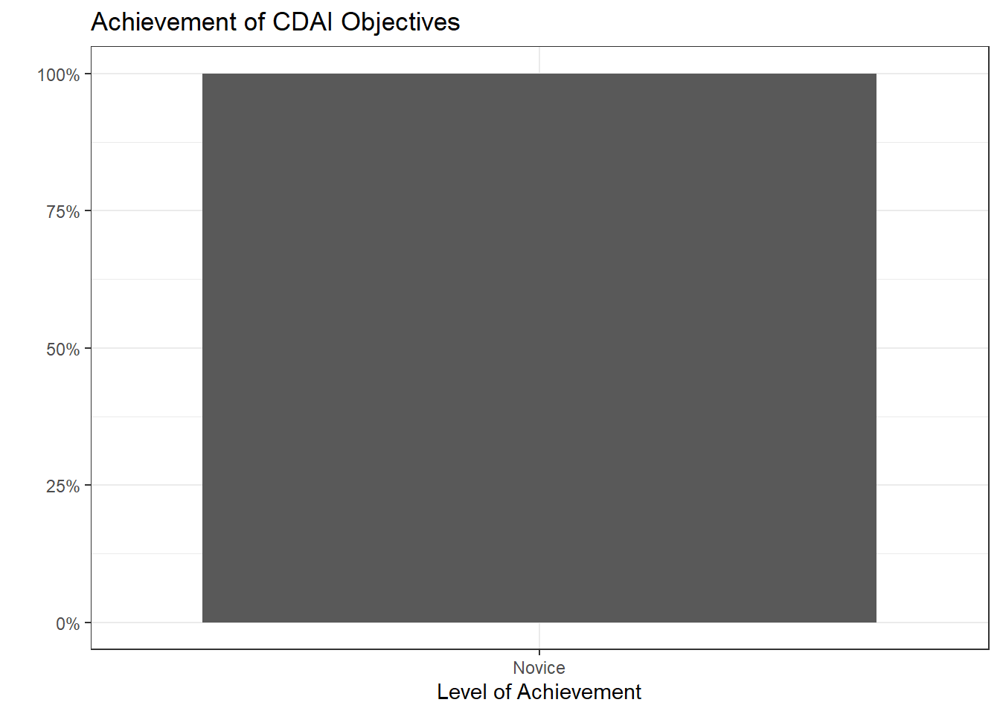
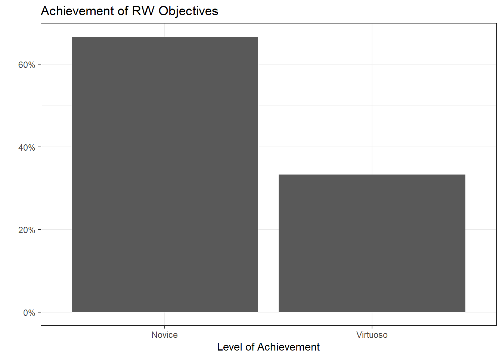
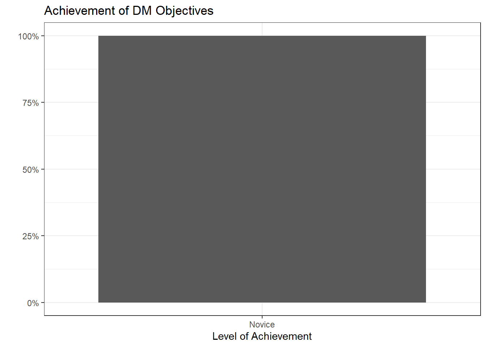
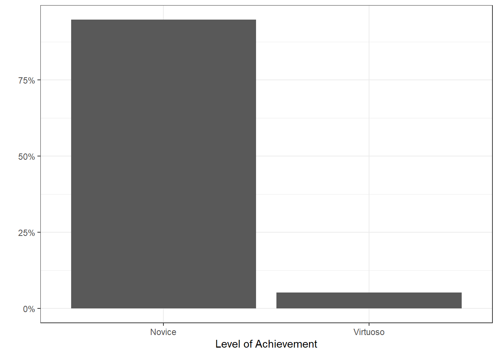

Stat 541 Final Grade Reflection
Independent Learning (IL):
These objectives show your ability to seek out new information and adapt to new tools to solve data analysis problems.
[IL-1] Adding new skills:
- I can find and adopt new packages to accomplish tasks.
- I can adapt to different syntax styles (tidy, base, formula style, data.table).
Level: 1
Justification:
[IL-2] Online resources:
- I can use online resources (e.g., Google, ChatGPT, StackOverflow, YouTube) to solve problems, debug, or find new tools.
- I can use tutorials, etc. to enhance my understanding of new concepts.
- I can find source code for similar projects to use as starting points for my own.
Level: 1
Justification:
IL Summary
Reproducible Workflow (RW):
These objectives show your ability to produce artifacts and deliverables that are organized, documented, version tracked, and responsibly designed.
[RW-1] File, code, and data management:
- I can use Git and GitHub to track my progress (creating repos, cloning, forking, pull requesting).
- I always use R Projects and the {here} package to organize my scripts, notebooks, data, and applications.
- I always use pull requests when collaborating with others.
Level: 3
Justification:
[RW-2] Notebooks:
- I can use Quarto to produce a reproducible notebook and polished rendered documents
- I can use appropriate chunk options (echo, error, cache, etc.) to render my Quarto document quickly and cleanly.
Level: 1
Justification:
[RW-3] Code style
- My code is clear, readable, well-organized, and well-commented.
Level: 1
Justification
RW Summary

Technical Communication (TC):
These objectives show your ability to communicate the processes you have implemented in your code, as well as the data conclusions and results.
[TC-1] Project summaries:
- I can create clear and succinct summaries of a project.
- I accurately interpret statistical or modeling results.
- I consider the appropriate scope and impact of my project results.
Level: 1
Justification:
[TC-2] Documentation:
- I can create a user-friendly dashboard.
- I provide ample documentation for my custom functions.
Level: 1
Justification:
TC Summary
Data Manipulation (DM):
These objectives relate to the collection, cleaning, processing, and preparing of datasets for analysis.
[DM-1] Data Preparation
- I can read in datasets to R, including untidy ones.
- I can clean datasets to deal with missing data, typos, poor formatting, etc.
Level: 1
Justification:
[DM-2] Data Wrangling
- I can cleverly use pivoting, separating, grouping, and joining to wrangle data.
- I can use mapping (
purrr) to perform repeated tasks.
Level: 1
Justification:
[DM-3] Data Formats
- I can use API urls to access JSON data and convert it into a data frame
- I can scrape data from the web and convert it into a data frame
## Fill in the line below with your self-assigned level for this objective.
my_level <- 1
portfolio_levels <- portfolio_levels %>%
bind_rows(tibble(Objective = "DM-3",
Level = my_level))Level: 1
Justification
DM Summary

Professional Visualization (PV):
[PV-1] Clear & Accessible Visualizations
- I can make my plots more clear by removing the legend and adding annotations.
- I can edit the titles, subtitles, captions, axis labels, etc. to create a clearly labelled plot.
- I can choose colors (“scales”) and themes to make a visually pleasing and accessible plot.
Level: 1
Justification:
[PV-2] Dynamic Visualizations
- I can use a package like {gganimate} to create self-contained gifs.
- I can use a package like {plotly}, {ggplotly}, {leaflet}, {ggirafe}, etc. to make interactive html widgets.
Level: 1
Justification:
[PV-3] Interactive Visualizations
- I can use Shiny or webR to create visualizations that react to a user’s input.
Level: 1
Justification:
PV Summary
Code Design, Algorithms, Iteration (CDAI):
These objectives ask you to design code-based approaches to statistical computing problems, usually involving iteration to a stopping condition.
[CDAI-1] R Programming Language
- I understand non-standard evaluation (aka “tidy eval” or “unquoted objects”), and I can use tunneling in my functions.
- I understand functional programming, and I can use functions as objects in my code design.
Level: 1
Justification:
[CDAI-2] Object Handling
- I have built in checks for possible input problems
- I can make reasonable choices in my code design about when to save intermediate objects.
- I can convert objects between types and structures as needed.
Level: 1
Justification:
[CDAI-3] Speed and Efficiency
- I can recognize moments of possible slowdown in my code, and use built-in functions or parallelizing to speed them up.
- I always use and design vectorized functions whenever possible.
Level: 1
Justification:
[CDAI-4] Supporting Functions
- I write helper / shortcut functions to streamline repeated tasks and make my code easier to read.
- I use intermediate functions to streamline repeated or looping processes.
Level: 1
Justification:
[CDAI-5] Algorithmic Process
- I can invent and implement my own iterative algorithm.
- My loops are clean and efficient.
- I have built in checks for possible problems or extreme cases in the algorithm.
Level: 1
Justification:
[CDAI-6] Generative Art
- I can apply a variety of generative art functions to make a visually pleasing piece.
- I can explain why particular changes to the code result in particular differences in the visualization.
Level: 1
Justification:
CDAI Summary
Overall Summary

Grade
Based on the summary plot above, I believe I have earned a ____ in STAT 541.